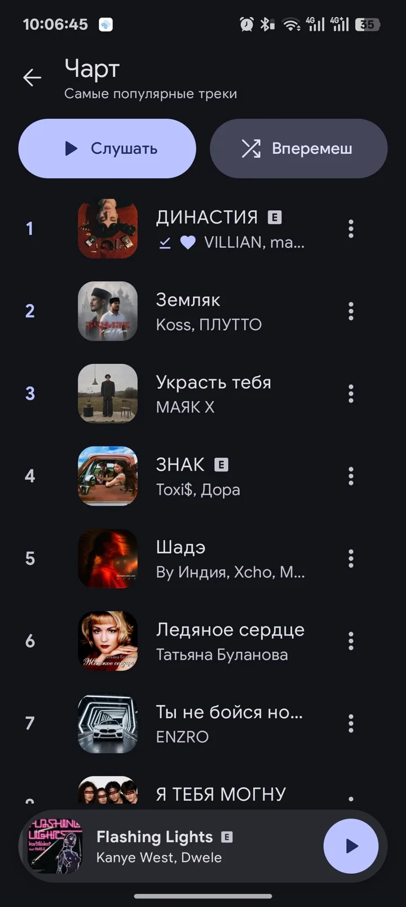
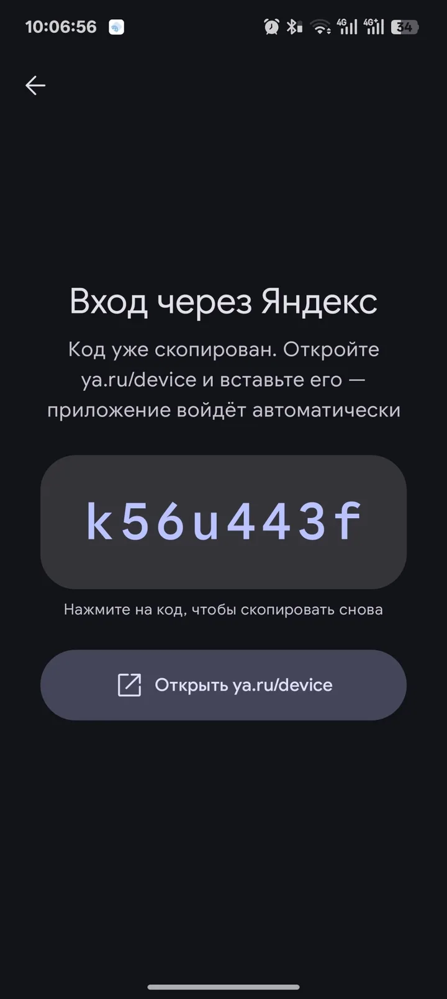

Моя волна
Один тап на главном экране запускает бесконечный поток. Характер, настроение и язык настраиваются в пару касаний.
Моя волна
Нативное приложение для Android: ваша коллекция, «Моя волна», чарт, распознавание музыки, эквалайзер и оформление под ваш цвет. Это не патч официального клиента.
Один тап на главном экране запускает бесконечный поток. Характер, настроение и язык настраиваются в пару касаний.
Самые популярные треки: слушайте подборку целиком или вперемешку.

Узнаёт трек с микрофона или со звука устройства. Плитку распознавания можно добавить в шторку и запускать одним касанием.
Полосы частот и готовые пресеты.
Создавайте, переименовывайте и удаляйте плейлисты, добавляйте в них треки прямо из поиска.
Сохраняйте «Любимое», плейлисты и альбомы и слушайте скачанное без сети.
Строки с таймкодами, если они есть в источнике, и обычный текст, если нет.
Виджет с обложкой и управлением, уведомление, экран блокировки и выбор устройства вывода звука.
Папка «С устройства» открывает музыку с телефона. Отключить её можно в настройках: «Офлайн-режим».

